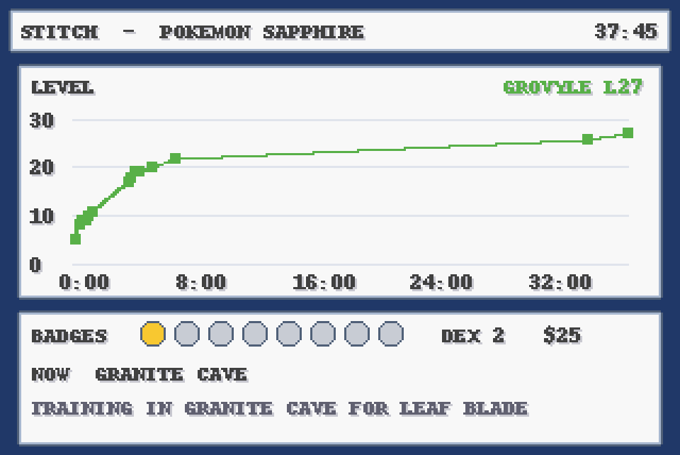

Plays while you sleep.
An autopilot for games. It reads each game’s own state and plays for real.

- DuolingoEvery course, chess and math, around the clock. The streak never breaks.
- FactorioBeaten. A rocket launched from a base it built itself, through the game's own API.
- Game Dev TycoonRunning a studio in its own save slot, through a bridge mod.
- FEZBeaten: all 32 cubes and the Star Gate ending.
- Papers, PleaseDays 1 to 9 approved, reading every document on the desk.
- Oxygen Not IncludedColony 7, every rule read from the game's own code.
- Pokemon SapphirePlaying now as Stitch with Treecko. Graph above.
- MirageOur own desert platformer inside Joshua Tree, played from its state lines.
- Pikmin 2Playing now in Dolphin, reading RAM against the decomp.
- It reads the answer key. Duolingo still holds the right answer in its own components. Duke reads it and clicks.
- It plays for real. A mod, the save file or the game’s RAM, read before every move. No cheats.
- It never guesses. A shape it has not seen gets logged and skipped.
Watch it on Mac, iPhone, Watch, Android, Windows, Linux and the terminal. Source →
A study, not a product. Automated play breaks Duolingo’s terms. Read it, don’t run it.